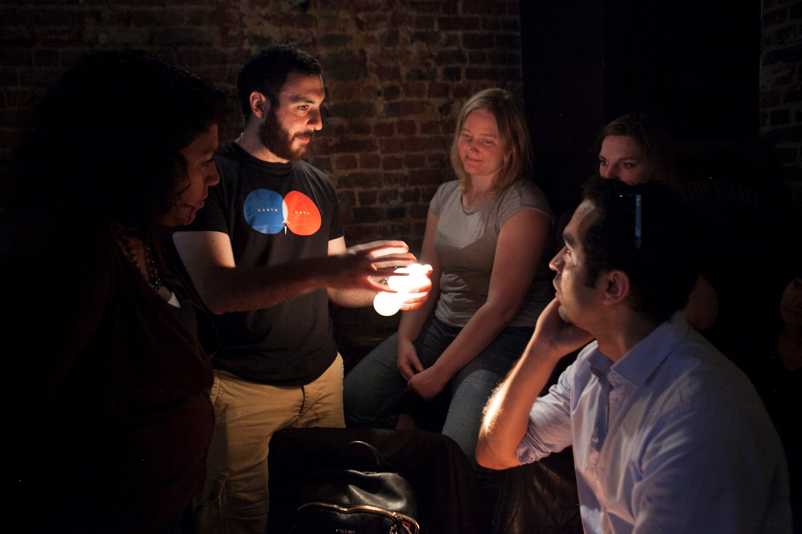

Outreach
From the time that I started studying astronomy, I have always been passionate about sharing my love of the cosmos with others. My first real experiences with outreach came in the form of operating the public telescope at my undergraduate institution, where I hosted telescope tours and showed visitors various astronomical objects from the roof of the science building.
In person outreach
Since then, I have realized that I really love doing outreach where I can have conversations with individuals or small groups of people, and this has led me to seek out these types of events. For example, I participated in a Speed Dating with a Scientist Valentine's Day event hosted through the Pint of Science team in Belgium, where I got to have 5 minute "science dates" with small groups of non-scientists. In these types of events, I find that the people I am talking with seem more relaxed and willing to ask the questions that they are too shy to ask in front of larger groups of people. Similarly, I participated in the Astronomia al Parque event organized by ESO where we brought posters and props to a park in Santiago in an effort to share some of the science being done at ESO with the general public. This also happened to be my first forray into public outreach in Spanish!
Online outreach
While I enjoy these conversations with small groups, I also realize that the number of people that one can reach with such events is limited, especially when done in person. For this reason, I have also been involved in several online outreach initiatives, mainly through the creation of YouTube videos. Towards the beginning of the COVID 19 pandemic in early 2020, I was invited to participate in one of the first Couch of Science live online events hosted the Pint of Science Belgium team. In this event, we discussed a recent paper that my team had published, and specifically what the scientific process looks like, from the inception of the idea, to the data analysis, to the paper writing, to finally the publication. More recently, I collaborated with the Space y Chile YouTube channel to make a short 3 minute video talking about the research that I am currently working on. Check it out below:
Outreach in VR
Over the past few years, I have also been working on a virtual reality app to simulate binary star systems. Using Unity, I've created a virtual enviroment where a user can adjust the orbital parameter of a binary system and see how it affects the geometry of the orbit. Soon, Roche geometry will be implemented allowing the user to see how the geometry of the stars themselves also change. Since this is in VR, the user can pick up their binary system that they've created and interact with it in a more natural way, turning it around in their hands and seeing the system from all angles. My goal with this app is to allow users to explore how each of the orbital parameters affects the orbit of the system and to get a better understanding of how we can characterize the orbits of newly discovered systems.